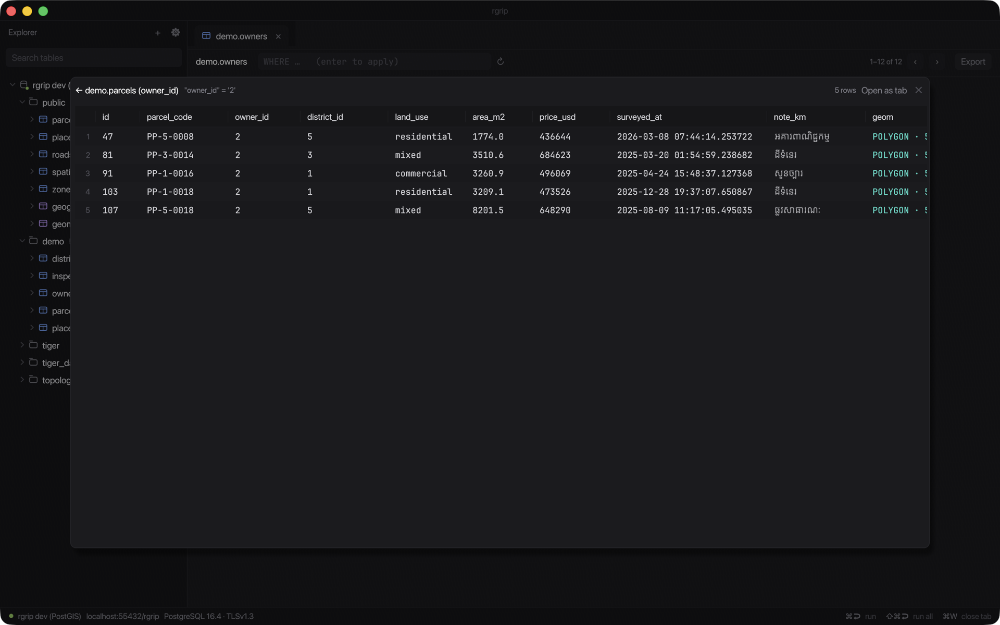
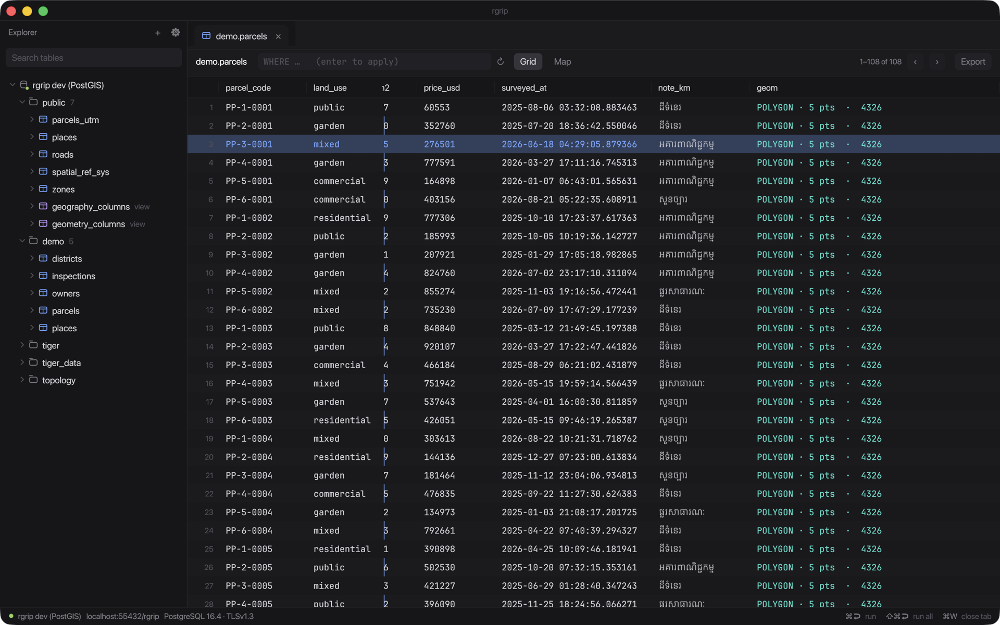
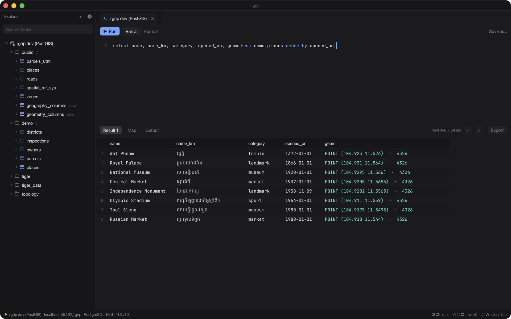

Connections
- SSL modes from
disabletoverify-full, custom CA, client certs - SSH tunnels with password or key
- Paste
postgres://URLs,key=valueorjdbc:postgresql:// - Copy the connection URL back out
Open source · Native macOS · Rust
A minimal, DataGrip-style PostgreSQL client built in Rust with egui. Query, edit and follow relations — then see your PostGIS data on a map, with proper Khmer text shaping.
Apple silicon · free · MIT OR Apache-2.0

A small, fast, native tool for people who live in SQL.
disable to verify-full, custom CA, client certspostgres:// URLs, key=value or jdbc:postgresql://Type in the editor, press Tab, get a complete query.
/con_4326, /con_4326_2 ArcGIS st_geometry via text/con_merc default SRID 32648/srid /top /countdate, timestamp, timestamptz, time→ users, ← posts) in a popupLittle workflows that add up.
PostGIS
Geometry columns become readable cells and one click puts them on a map. Pick a dark, light, streets or satellite basemap. rgrip reprojects WGS84, Web Mercator and UTM on the client and flags features that landed in the wrong hemisphere (hello, swapped lat/lon).

Editing
Double-click, pick a date from the calendar, set NULL. Pending changes stay highlighted until you save, and then everything goes out in a single transaction keyed on the primary key. If one row fails, nothing changes.

Relations
Right-click a row and jump to the rows it points to, or the rows pointing at it. Keep chaining, step Back, or promote any hop to its own tab.

Grid
Freeze columns so keys and names stay put while you scroll through wide tables. The grid is virtualized and pages 1,000 rows at a time from the server.

Khmer
Complex scripts need real shaping. rgrip uses HarfBuzz through rustybuzz, so Khmer looks right in the grid, explorer, map labels and exported images.

Sharing
Need to show someone a result? One click copies a PNG of the table to your clipboard, ready to paste into Telegram or Slack. There is also Copy for AI agent, which gives you markdown with the query and column types.

Grab the Apple silicon zip from GitHub Releases, unzip, and open. Updates arrive in-app.
Needs Rust 1.88 or newer.
git clone https://github.com/yoouTaro/rgrip && cd rgrip && cargo run -p rgripសួស្តី
Hello, from a client that can actually write it.
rgrip is free and open source. If it saves you time, a coffee helps keep the late-night commits flowing. Sponsorships go through GitHub Sponsors, which passes on 100% to the maintainer.
☕ Buy me a coffeeVibe-coded with ☕ and an AI pair programmer.